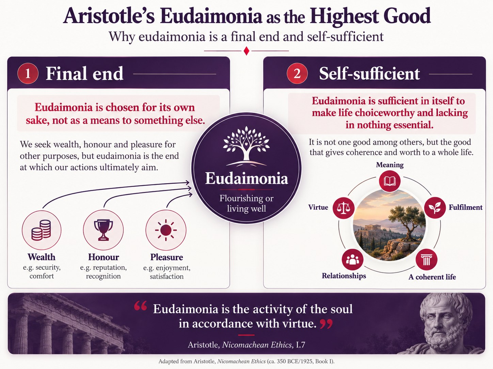

Aristotle: Eudaimonia, virtue and practical wisdom
Aristotle's Eudaimonia
One of the most influential philosophical accounts of flourishing comes from Aristotle, who identifies eudaimonia, often translated as happiness or flourishing, as the highest human good. For Aristotle, flourishing involves living well through reason and virtuous activity over a lifetime.
 Watch
Watch
In the Nicomachean Ethics, Aristotle distinguishes between goods we pursue for the sake of something else, such as money, and those valued for their own sake. Eudaimonia is the ultimate good, pursued for its own sake and providing direction to our other pursuits (Aristotle, ca. 350 BCE/1925, Book I). Aristotle’s account emerged from ancient Greek society, but his ideas continue to inform how we understand flourishing and the moral purposes of education.
Importantly, Aristotle believed that virtue develops through practice. We become just, honest or courageous by acting in these ways, gradually developing good habits alongside moral understanding.
Central to this development is phronesis, or practical wisdom, which helps us make good judgements when values or responsibilities come into conflict (Aristotle, ca. 350 BCE/1925, Books II and VI). For teachers, practical wisdom involves considering what is educationally and morally appropriate in a particular situation, while attending to the circumstances and needs of individual students. Practical wisdom is central to many contemporary neo-Aristotelian approaches to character education.

Suggested Reading
Watts, P., & Kristjánsson, K. (2022). Character education. In R. Curren (Ed.), Handbook of philosophy of education (pp. 172–184). Routledge. ACU Library record
Suggested Listening
Podcast: Ask Aristotle: A philosophy podcast
Reflect
Think of a time when following school policy appeared to conflict with your responsibility to care for an individual student. How did you decide what was appropriate? What values informed your judgement?